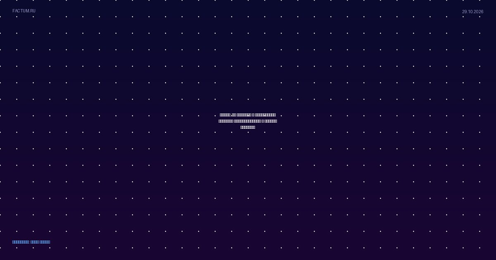

Путин: РФ открыта к увеличению закупок произведенных в Африке товаров
По словам президента, об интересе к этому свидетельствуют многочисленные переговоры на полях саммита Россия - Африка по линии министерств и ведомств, деловых кругов

По словам президента, об интересе к этому свидетельствуют многочисленные переговоры на полях саммита Россия - Африка по линии министерств и ведомств, деловых кругов